Home / Countries
Countries
Explore art and cultural heritage represented on stamps from different countries.

Albania — Mosaics
Historic mosaics in Albanian philately.

The Netherlands — Vermeer
Dutch painting and postage stamps.
Romanian Paintings on Stamps
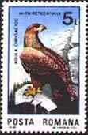
Wildlife on Romanian Stamps
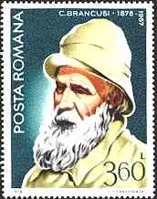
Romanian Sculptures on Stamps

Damaged And Missed Romanian Paintings
Looking Back at Beauty (Japan Art Issues on Stamps)
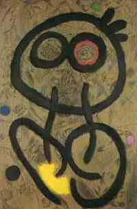
Musée Miro à Barcelone
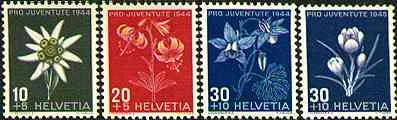
Swiss Topical Stamps
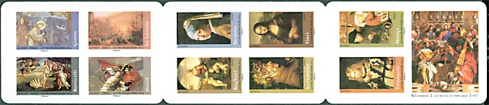
Great Paintings on Booklet 2008
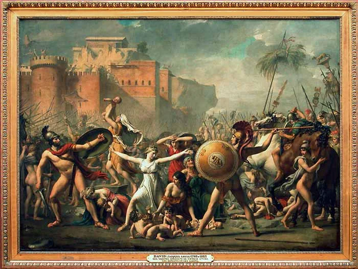
The Intervention of the Sabine Women, by David - on Stamps
Titian Paintings on Sramps
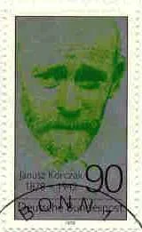
J. Korczak, a Polish Artist, on Stamps

Two Modern Singapore painters - Liu Kang

Old Chinese Paintings on Stamps - Cathay City
Old Chinese Paintings on Stamps
Chinese Horses Paintings on Stamps
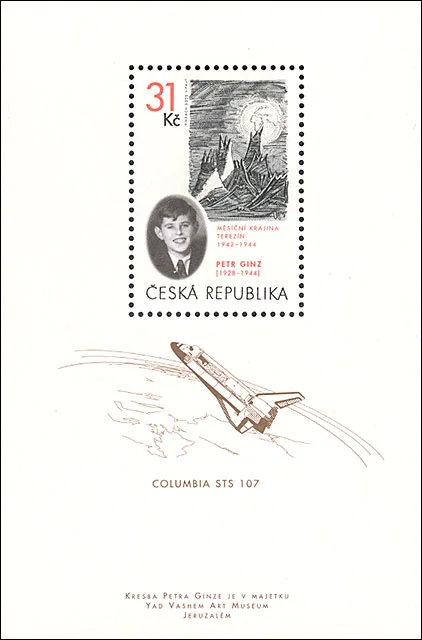
Petr Ginz - a young Czech artist on a stamp
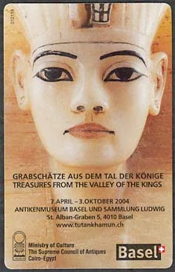
Tutankhamun Exhibition 2004 in Basel, Switzerland
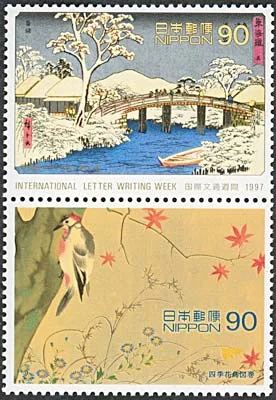
Landscapes by the Japanese painter Hiroshige Ando
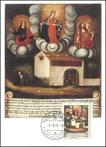
Votive Pictures on Liechtenstein Stamps
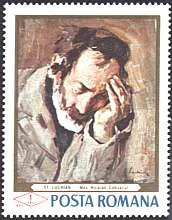
Picturi deteriorate din Museul de Arta
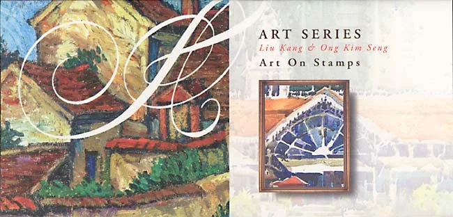
Two Modern Singapore painters - Ong Kim Seng
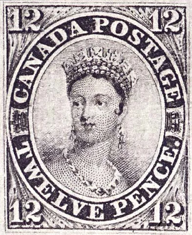
The First Art Stamp Ever
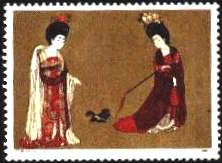
Ancient Chinese Paintings on Stamps
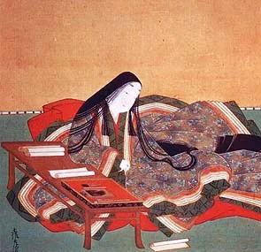
1000th Anniversary of the "Tale of Genji"
Wooden Sculptures from Tree fORMS
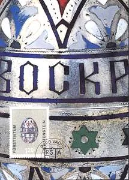
Russian Easter Eggs

Istoria tristă a unei opere de artă
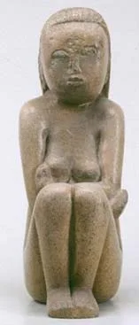
The Sad Story of a Renown Work of Art
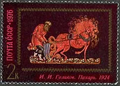
Laquer Miniature Paintings from Palekh, Russia, on stamps
The Dr. Maya Angelou Stamp Blunder, by USPS
Paul Cezanne: 100 Birth Anniversary Stamp - 1939
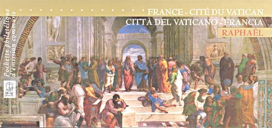
Raphael Joint Issue France - Vatican 2005
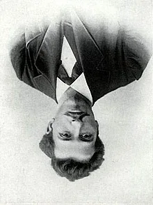
THE UPSIDE-DOWN PAINTING BY MONDRIAN
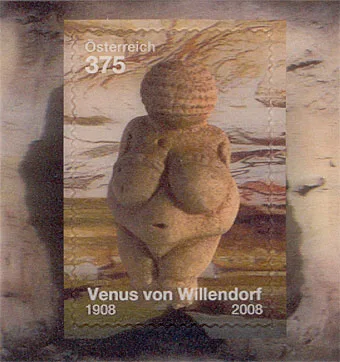
Austrian Women on Stamps
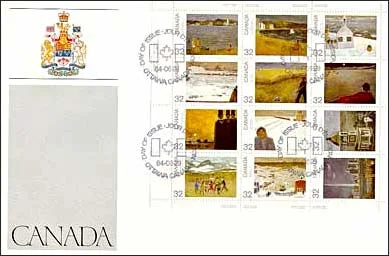
People on Paintings of J.-P. Lemieux
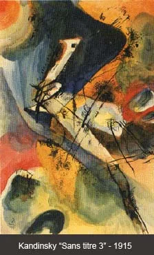
Will This Kind of Art Ever Die?
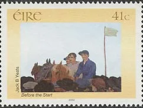
Paintings from the Irish national gallery
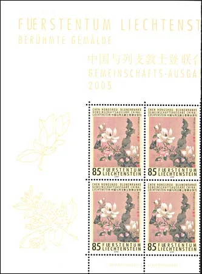
Flowers on the Joint Issue Liechtenstein - China 2005
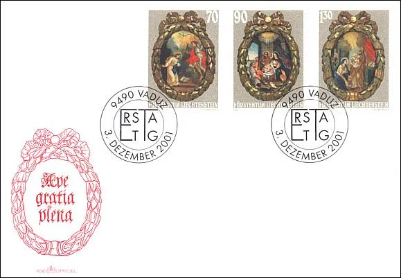
Christmas 2001 Liechtenstein Stamps
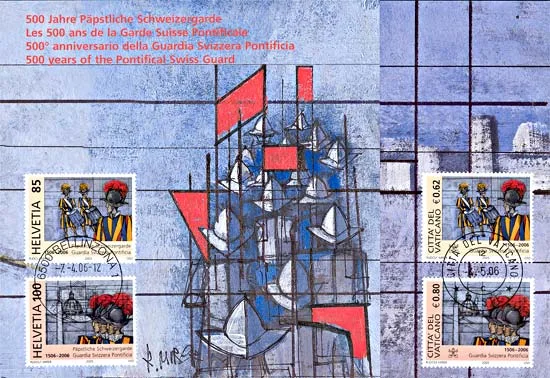
Swiss Papal Guards Folder- Joint Issue Switzerland - Vatican
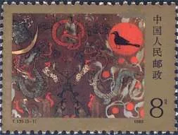
Chinese Paintings on Silk, Shown on Stamps
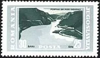
Joint Issue Romania - Jugoslavia
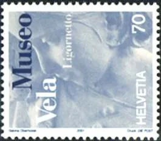
Museum Vela in Switzerland
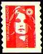
Stationairies Without Face Value
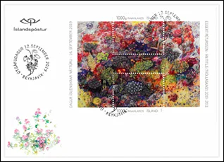
THE LAST ART STAMP OF ICELAND?
More from the original archive
These links currently open the original website while migration continues.
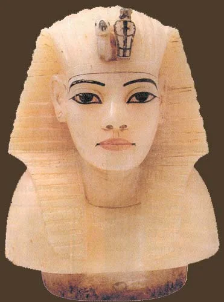
Tutankhamun on StampsGreek Vases on StampsChinese Silk and ArtJanusz Korczak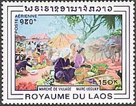
Marc Leguay and Laos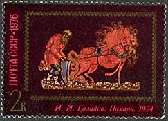
Palekh MiniaturesRussian Folk Tales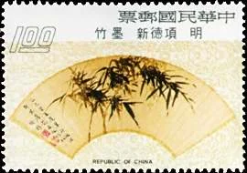
Chinese Fans on Stamps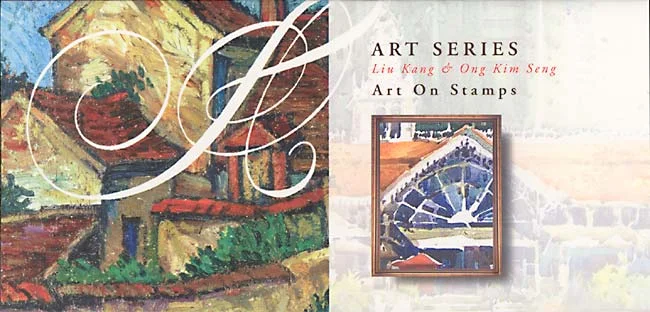
Singapore Art SeriesHedy Lamarr on Stamps Swiss Art on Stamps
Swiss Art on Stamps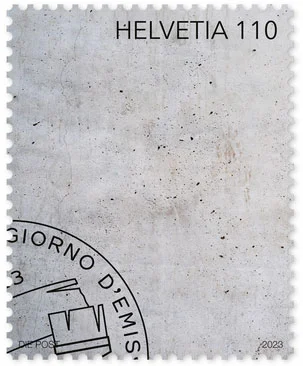
Swiss Art Wall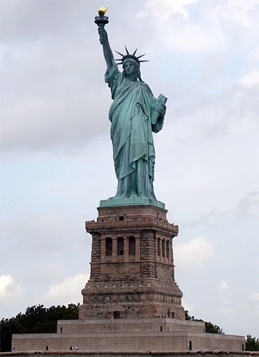
The Statue of Liberty on Postal Stamps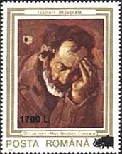
Inflation and Deflation in Romania 2000, on StampsUN Publicity Slogans on Covers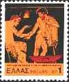
Ancient Greek Art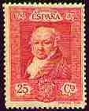
Francesco Goya - the Great Spanish Painter, on Stamps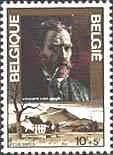
Vincent Van Gogh - Flowers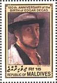
Degas Paintings on Stamps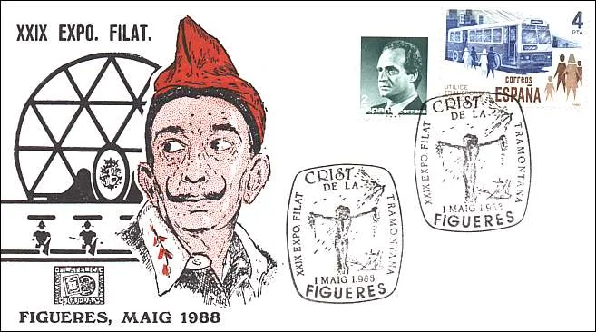
Slavador Dali on Stamps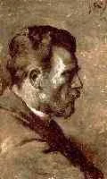
Picasso Museum in Barcelone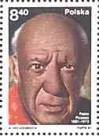
Picasso and Members of His Family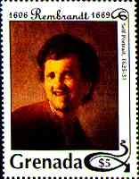
Self-Portrait or The Art of Introspection.Paintings of Gustav Klimt on Postal Stamps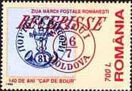
Romanian Classic StampsMonaco Princes and Princesses on StampsGreek Sculpture on StampsArt Stamps Issues from LiechtensteinInflation and Deflation in Romania, on StampsMonet Paintings on StampsPaintings of Marc Leguay on Stamps of laosTitian - A Renown Italian Painter Vincent Van Gogh - Flowery NatureNapoleon Paintings on StampsRomanian Children on PaintingsPegasus on Stamps
Vincent Van Gogh - Flowery NatureNapoleon Paintings on StampsRomanian Children on PaintingsPegasus on Stamps Titian - A Great Master of the PortraitHEDY LAMARR, THE ACTRESS AND INVENTORRubens - Venus at a Mirror
Titian - A Great Master of the PortraitHEDY LAMARR, THE ACTRESS AND INVENTORRubens - Venus at a Mirror Chinese Painted Fans on StampsSelf-adhesive Stamps RevolutionMosaics of Albania on StampsEaster Eggs by FabergéToshusai Sharaku - The Great Japanese Painter, on stampsSwiss Wooden StampThe Death of Hundertwasser - an Austrian Painter
Chinese Painted Fans on StampsSelf-adhesive Stamps RevolutionMosaics of Albania on StampsEaster Eggs by FabergéToshusai Sharaku - The Great Japanese Painter, on stampsSwiss Wooden StampThe Death of Hundertwasser - an Austrian Painter Klimt Stamp Book by Austria PostThe Colors of Sistine Madonna on StampsOp Art vs Albert AnkerTHE MOST BEAUTIFUL EUROPEAN STAMP OF THE YEAR 2012Dracula on Postal StampsVan Gogh 150th Birth Anniversary on StampsJoint Stamps Issues of SwitzerlandPortraits of Judith on Postal StampsLes tres riches heures du Duc de BerryCanadian Art SeriesRembrandt 400th Birth Anniversary on TGP StampsDegas - Ballet DancersTutankhamun on Postal StampsRomanian Frescoes on StampsFive Years PlansPhotographs by Rene Burri on Swiss Definitive StampsPaintings of Vigée-Lebrun, on stampsHundertwasser's 3rd Death AnniversaryPicasso and Members of His Family on StampsOld Chinese Scorolls on StampsChinese Modern Art - HorsesJapan Art SeriesThe Princes and the Principality of MonacoRomania presented by its postal stampsNapoleonic Museum in CubaChinese Dogs Paintings on StampsHans Erni - a Swiss Artist, 100th Birth AnniversarySwiss Papal Guard Stamps - Joint Issue Switzerland - VaticanThe UPU memorial in Berne, SwitzerlandThe Statue of Liberty on the 2010 US StampArt at the Gruyère CastleBeautiful Women on StampsDogs on Postal StampsCzeslav Slania - The EngraverCensus on Postal StampsFrom Postal stamps to digital ones150 Years Sitting HelvetiaWhistler's "Portrait of my Mother"Impressionist Painters on a French Booklet 2006Rembrandt. Famous Works & Etchings
Klimt Stamp Book by Austria PostThe Colors of Sistine Madonna on StampsOp Art vs Albert AnkerTHE MOST BEAUTIFUL EUROPEAN STAMP OF THE YEAR 2012Dracula on Postal StampsVan Gogh 150th Birth Anniversary on StampsJoint Stamps Issues of SwitzerlandPortraits of Judith on Postal StampsLes tres riches heures du Duc de BerryCanadian Art SeriesRembrandt 400th Birth Anniversary on TGP StampsDegas - Ballet DancersTutankhamun on Postal StampsRomanian Frescoes on StampsFive Years PlansPhotographs by Rene Burri on Swiss Definitive StampsPaintings of Vigée-Lebrun, on stampsHundertwasser's 3rd Death AnniversaryPicasso and Members of His Family on StampsOld Chinese Scorolls on StampsChinese Modern Art - HorsesJapan Art SeriesThe Princes and the Principality of MonacoRomania presented by its postal stampsNapoleonic Museum in CubaChinese Dogs Paintings on StampsHans Erni - a Swiss Artist, 100th Birth AnniversarySwiss Papal Guard Stamps - Joint Issue Switzerland - VaticanThe UPU memorial in Berne, SwitzerlandThe Statue of Liberty on the 2010 US StampArt at the Gruyère CastleBeautiful Women on StampsDogs on Postal StampsCzeslav Slania - The EngraverCensus on Postal StampsFrom Postal stamps to digital ones150 Years Sitting HelvetiaWhistler's "Portrait of my Mother"Impressionist Painters on a French Booklet 2006Rembrandt. Famous Works & Etchings Swiss Post — Free Letters to the USA in 2001Vermeer — Girl with a Pearl EarringStowasser — Art on New Zealand StampsUniversal Postal Union — Art on StampsWhistler’s Mother — Stamp DesignStatue of Liberty — Las Vegas StampRembrandt — Self-Portraits on StampsPicasso — Art Stamps and ControversyClaude Monet — Original Stamp Gallery
Swiss Post — Free Letters to the USA in 2001Vermeer — Girl with a Pearl EarringStowasser — Art on New Zealand StampsUniversal Postal Union — Art on StampsWhistler’s Mother — Stamp DesignStatue of Liberty — Las Vegas StampRembrandt — Self-Portraits on StampsPicasso — Art Stamps and ControversyClaude Monet — Original Stamp Gallery Francisco Goya — Original Stamp GalleryJapanese Art Stamps — Third GalleryRomanian Children in Paintings — Second GallerySwiss Joint Stamp Issues — Second GallerySwitzerland — Terrorism and Postal Stamps
Francisco Goya — Original Stamp GalleryJapanese Art Stamps — Third GalleryRomanian Children in Paintings — Second GallerySwiss Joint Stamp Issues — Second GallerySwitzerland — Terrorism and Postal Stamps